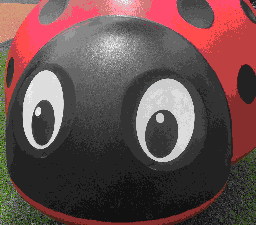
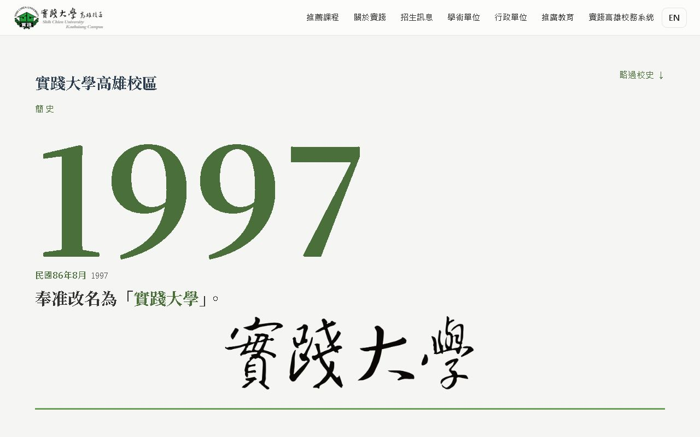

張栢睿
我是張栢睿，實踐大學高雄校區的學生，用 HTML、CSS 和 JavaScript 把想法一顆一顆拼成網頁。

作品 01

實踐大學高雄校區介紹網站
我的「網頁程式設計」總作業。沒有框架、沒有建置工具，只用 HTML、CSS 和 JavaScript，把學校的沿革和師長介紹做成一個完整的網站。
- 12 個頁面，中英雙語
- 1958 → 1997 捲動時走過校史，最後寫出書法校名
- 253KB → 3KB 圖示字型只留用到的圖示，手機載入更快
- 手機版、深色模式、減少動態 全部都有
下一幅，拼裝中。